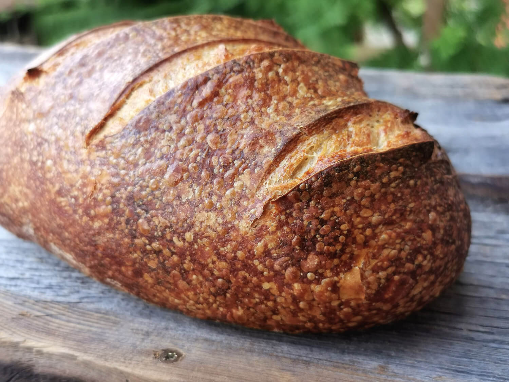

Selbstgemachtes Brot

Einfaches Rezept für hausgemachtes Brot.
Zutaten:
- 500g Weizenmehl
- 1 Päckchen Trockenhefe
- 300ml warmes Wasser
- 1 TL Salz
- 1 EL Zucker
- 1 EL Olivenöl
Zubereitung:
- In einer großen Schüssel das Mehl mit der Trockenhefe vermischen.
- Warmes Wasser hinzufügen und gut verrühren, bis ein weicher Teig entsteht.
- Salz, Zucker und Olivenöl hinzufügen und weiter kneten, bis alle Zutaten gut kombiniert sind.
- Den Teig abdecken und an einem warmen Ort etwa 1 Stunde ruhen lassen, bis er sich verdoppelt hat.
- Den Teig auf einer bemehlten Oberfläche kneten und zu einem Laib formen.
- Den Laib auf ein mit Backpapier ausgelegtes Backblech legen und weitere 30 Minuten ruhen lassen.
- Den Ofen auf 200°C vorheizen.
- Das Brot mit einem scharfen Messer einschneiden und für etwa 25-30 Minuten backen, bis es goldbraun ist und hohl klingt, wenn man auf die Unterseite klopft.
- Auf einem Gitterrost abkühlen lassen und genießen!